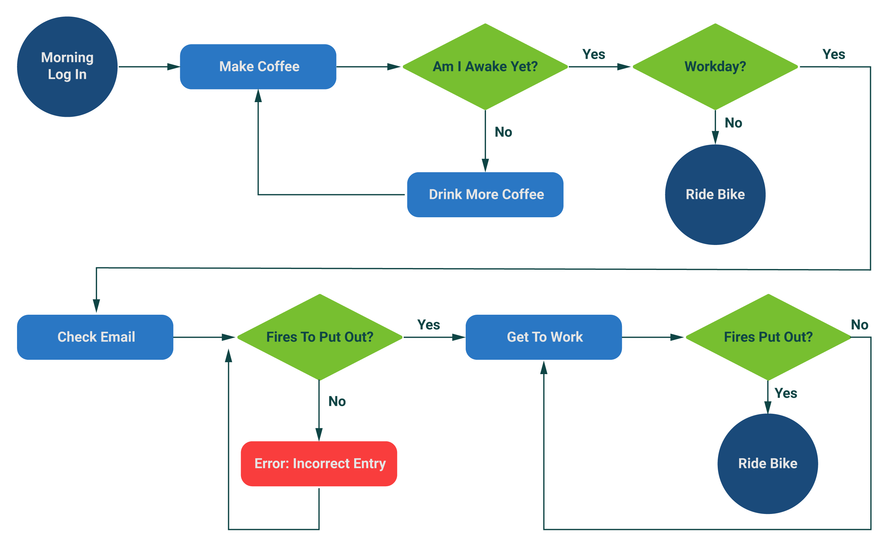

About:
Location: Minneapolis-St. Paul, MN
Degree: B.S. Design Communication, University of Minnesota
Certificates: UX/UI Bootcamp, University of Minnesota
Bio:
I'm a user-centered designer based in Minnesota, focusing on UX/UI Design with a background in graphic design and licensed product design and development. I advocate for the customer and stakeholder alike to create products that bring value to both groups. My approach to design and life in general is best summed up by a simple question:
“What can we do to make this better?”
Tools:
Adobe Creative Suite (Illustrator, Photoshop, XD, InDesign)
Figma, InVision, Sketch, Miro
Github, Visual Studio Code
Application agnostic — willing to learn/use any app required by the team or project needs.
Let's not forget pen and paper, shall we?

Skills:
UX Design: heuristics, user interviews, personas, affinity maps, competitive analysis, feature prioritization, user flows, journey maps, storyboards
UI Design: sketches, wireframes, prototypes, style tiles, user testing
Graphic Design: typography, layout, branding, identity, photography
Web Dev: Conversational in: HTML5, CSS3, Bootstrap, jQuery, GitHub, Wordpress CMS
Empathy: Putting yourself in your customer's shoes is the only way to make successful products. I make it a priority to understand the customer's needs and build up from there.
Enthusiasm: I get to make a living by bringing ideas to life — how fun is that? I love what I do, and I bring that enthusiasm to every project, large or small.
Education: Creativity is a journey, not a destination. I'm constantly learning new skills, new tools, and new ways of doing things, and applying them to my workflow.
Experience: I bring years of professional design experience to the table. Most-recently, designing licensed products for brands such as: Jack Daniel's, John Deere, and Anheuser-Busch. Style guides and brand standards are my jam.
Life:
 Bikes: Bikes are my reset button. I race and ride mountain, gravel and fat bikes whenever I can, usually around 5-6,000 miles a year. 8 hours in the saddle in the middle of nowhere clears my head and more often than not provides design inspiration.
Coffee: Dark roast, black. Anything by Peace Coffee hits the spot. I'll never turn down a proper Americano or cappuccino.
Music: KEXP Seattle powers me through most days. Anything with the "alt-" prefix. When in doubt, New Order or Sonic Youth.
Travel: There's nothing like the feeling of making a connection to history and making connections with other cultures. Japan and Austria, you're up next once we're cleared for takeoff again.